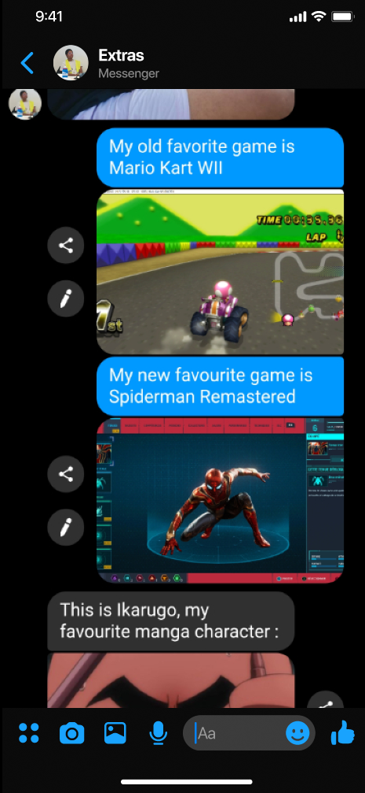
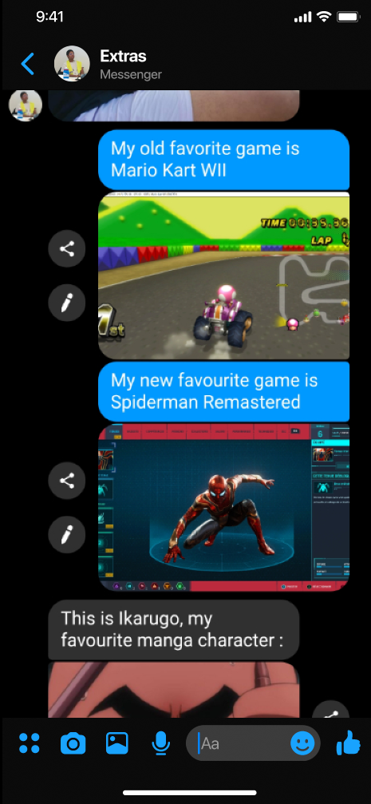
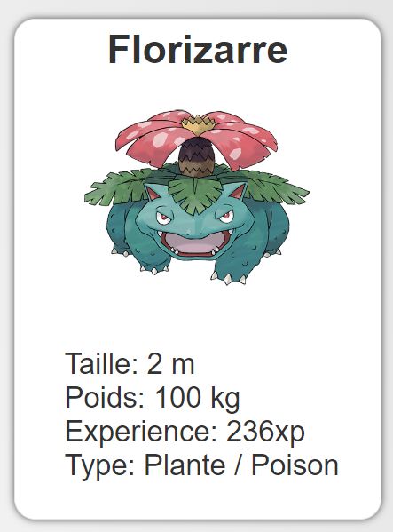
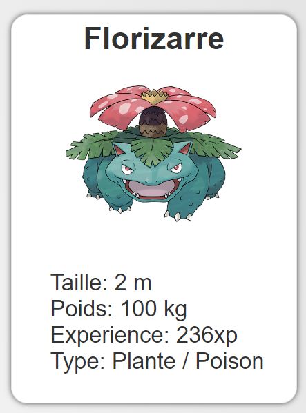

Bienvenue sur mon portfolio !

Compétences
DaVinci Resolve
Utilisation du logiciel de montage DaVinci Resolve Studio dans le cadre personnel, étudiant et professionnel.
Suite Affinity
Prise en main des logiciels Affinity Photo, Designer et Publisher dans le cadre de TP ou d'essais personnels.

Intégration Web
Création de sites web à partir d'HTML, CSS et Javascript.

Figma
Utilisation de Figma pour le maquettage web ainsi que pour la réalisation de visuels simples. Utilisation de la fonction "flow" pour le prototypage d'application.

Sketchbook
Réalisation de dessins et d'animations pour la vidéo promotionelle d'une entreprise ainsi que dans le cadre personnel.

Premiere Pro
Montage de vidéos sur Premiere Pro ainsi que sur After Effects pour la réalisation de vidéos dans le cadre personnel.
Projets
Dessin isométrique
Dans le cadre d'un TP de culture artistique Le dessin représente un petit espace carré au centre représentant un salon. On y voit un canapé, une lampe, un tableau minimaliste, une étagère a livres, et un bureau sur lequel est posé un clavier, une souris, une tasse et un écran qui est en fait la fenêtre. Dans le jardin, on peut voir une petite table basse sur laquelle est posée un pot avec une pousse de bambou ainsi qu’un paillasson. Le jardin est délimité par une haie et une petite barrière. Derrière la maison, la ville est représentée par deux immeubles gris collés. L’objectif est ici de montrer le contraste de couleurs entre la ville, monotone et la maison, où il y a bien plus de couleurs et d’objets. La seule ouverture sur la ville est d’ailleurs l’écran/fenêtre.L'objectif de ce projet était de découvrir et de prendre en main le logiciel "Affinity Designer" ainsi que de développer sa créativité tout en restant dans la contrainte du dessin isométrique.
Tutoriel Vidéo
Réalisation d'une vidéo qui explique la mise en place et le fonctionnement du spot d'éclairage Amaran 100x.Ecriture du script en groupe, tournage des plans à l'aide du Canon 90D, enregistrement de la voix off en studio et Montage sur DaVinci Resolve. Ce projet a été réalisé en groupe et à donc nécessité une certaine organisation en ce qui concerne la répartition des tâches ainsi que pour le tournage. L'écriture a aussi demandé un "brainstorm" préalable de sorte a pouvoir organiser nos idées.
(Sous-titres et mise en ligne par Kelvin Huchet)
 

Application web en anglais
Mise en place d'une parodie de l'application "Messenger" dans le cadre d'un projet d'anglais d'autoprésentation. Cette parodie de l'interface utilisateur a été entièrement réalisée sur Figma.Ce projet m'a permis de prendre en main le logiciel Figma ainsi que le prototypage d'application. J'ai pu apprendre a utiliser les différentes fonctionnalités de figma et de ses extensions, tout en rédigeant le contenu en anglais.
 

Site web, gestion d'une base de données
Développement et mise en ligne d'un site web de gestion de collection de Pokémons Wireframe et flow réalisé sur Figma, front-end du site web codé en HTML et CSS et back-end en PHP.L'objectif de ce projet était de coder "from scratch" un site web dont la base de donnée (mySQL) était fournie. Le site devait être capable de créer une collection personnelle sur les demandes de l'utilisateur qui pouvait donc ajouter et retirer les pokemons qu'il souhaitait (parmi les 200 disponibles) ainsi qu'afficher les caractéristiques de chacun.

Autoportrait Graphique
Assemblage de différentes photos (prises à l'aide du Canon 90D) sur le logiciel Affinity Photo de sorte a créer un effet de "miroir cassé" dans lesquels chaque fragment est une photo différente de mon visage et crée un certain décalage.L'objectif de ce projet était de créer un autoportrait graphique délivrant un certain message à l'aide de photos de soi (prises en TP) que l'on devait modifier tout en gardant une certaine cohérence. Ce projet m'a permis de perfectionner ma maitrîse d'Affinity Photo ainsi que de développer ma créativité.
Parcours
2022-2025 (en cours)
BUT Métier du Multimédia et de l'Internet (MMI)
IUT de Lannion (22), Université de Rennes (Communication, Audiovisuel, Développement-Web)
Eté 2022
Brevet d'aptitude aux fonctions d'animateur (BAFA)
Formation, Stage pratique (scoutisme) et Approfondissement (Grands jeux)
2022
Baccalauréat général - Mention bien - Guebwiller(68)
Spécialités Sciences Economiques et Sociales; Histoire, Géographie, Géopolitique et
Sciences Politiques.
Option Langue, Littérature et Culture Etrangères, Anglais
 LinkedIn
LinkedIn Copier mon e-mail
Copier mon e-mailsoan.morey@etudiant.univ-rennes.fr